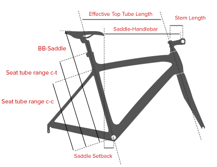
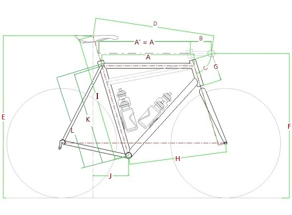

配件选择
- 关于自行车的误区
- 禧玛诺变速器等级的分类
- 详谈花鼓的响声：http://shop34699258.taobao.com/view_page-151817301.htm
- GIANT车架等级
- 选29还是26还是27.5？山地车轮径之争 透过现象看本质
- 关于座垫选择的讨论——由Fizik座垫说开去
- 骑行者自行车用品讲座之：座垫、屁股痛、性功能
- 成品轮组真的优于自编轮组么？(转自鬼Chase原创帖)
- WTB座垫官方网站
- WTB专业自行车零配件:http://jasonwtb.blog.163.com/
车架尺寸计算
Fit Calculator
| Place | 位置 | The Eddy Fit | The Competitive Fit | The French Fit |
|---|---|---|---|---|
| top tube length | 上管长 | 51.8 - 52.2 cm | 51.8 - 52.2 cm | 53 - 53.4 cm |
| seat tube range CC | 立管范围CC | 47.8 - 48.3 cm | 46.6 - 47.1 cm | 49.5 - 50 cm |
| seat tube range CT | 立管范围CT | 49.2 - 49.7 cm | 48 - 48.5 cm | 50.9 - 51.4 cm |
| stem length | 把立长 | 8.8 - 9.4 cm | 9.9 - 10.5 cm | 9 - 9.6 cm |
| BB saddle position | BB 鞍座位置 | 65.6 - 67.6 cm | 66.4 - 68.4 cm | 63.9 - 65.9 cm |
| saddle handlebar | 车座车把距离 | 47.8 - 48.4 cm | 47 - 47.6 cm | 49.5 - 50.1 cm |
| saddle setback | 车座后移 | 2 - 2.4 cm | 0.8 - 1.2 cm | 1.5 - 1.9 cm |
| seatpost type | 座杆类型 | not setback | not setback | setback |
- 位置图

FittingLab
| 位置 | 说明 | 尺寸 | 4966位相近身材车友均值 |
|---|---|---|---|
| 1 | 身高(height)： | 167cm | |
| 2 | 肩高(sternal notch)： | 136cm | |
| 3 | 裆高(inseam)： | 72cm | |
| 4 | 臂长(arm)： | 55cm | |
| 5 | 肩宽(shoulder width)： | 42cm | |
| 6 | 前臂(forearm)： | 32cm | |
| 7 | 大腿(thigh)： | 56cm | |
| 8 | 小腿(lowerLeg)： | 53cm | |
| 9 | 脚长(footSize) | 25cm | |
| 10 | 柔韧性(flexibility)： | 好(10b) | |
| 11 | 体重(weight)：74kg | ||
| 结果 | |||
| K | 车架(frame)： | 47.21cm | 47.26 |
| I | 车座高(bb-saddle height)： | 63.42cm | 63.61 |
| A+B | 有效伸展(effective reach)： | 63.31cm | 65.79 |
| Z | 车把宽(bar width)： | 41.12cm | 38.60 |
| A | 等效上管长(TopTube)： | 50.57 ～ 54.15cm | |
| B | 把立(Stem)： | 7.14 ～ 13.09cm | |
| J | 车座后移(SaddleSetBack)： | 24.14cm | |
| E-F | 座把差(SaddleBarDrop)： | 8.88cm | |
- 位置示意图

组车指南
-
8081老王对DIY的一些看法和建议 第一章：车架的选择
只要在路上，终究能到达。 8081单车成都店： 成都市成华区一环路东一段240号附3号 （电子科大一环路校门斜对面） 什邡店：什邡市莹华山南路什邡之星正门左侧 提供专业运动自行车个性化组装/定制/维护/活动组织服务 TEL：028-86936156 MOB：18608030730 QQ:10759162
- 贱贱大队长
- 骑行生活:【组装山地车】5000价位的配置推荐
-
骑迹老苗(12481912):关于自行车那点事
- 成都骑迹自行车运动推广有限公司
- 四川自行车运动网:http://www.scbike.net
- 总店联系地址:成都青羊区西大街同心路8号
- 联系电话:028-86270680
-
组车配置考虑
- STOUT FT15 蜘蛛侠 DIY山地车
-
淘宝购买链接：http://item.taobao.com/item.htm?spm=0.0.0.0.if4TWM&id=39813612605
需求：计划4000元左右组个山地车用于市区、长途骑行(如川西小环线等)。 车架：15.5/16寸，可装货架(带尾勾的版本更好维修？) 前叉：气叉或油簧叉可锁死前叉(线控?) 坐垫：WTB VOLT-0339 把套：海绵把套 脚踏：Wellgo MG-1轴承脚踏 传动：Shimano M610套件(或27速的?) 刹车：AVID BB7+AVID FR5线控碟刹(长途更便于调试和维修？)，碟片用什么好？ 轮组：久裕四培林花鼓(D041SB/D042SB、711/712)自编？成品轮组长途不好换幅条？ 碗组：培林碗组